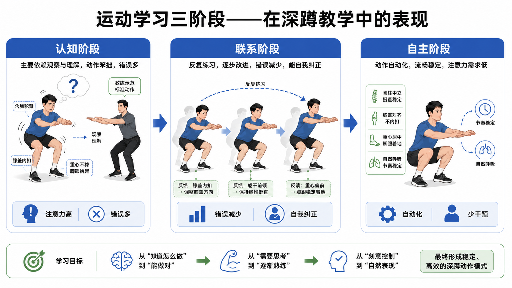

Day 39：运动学习的三阶段
今天只讲动作学习阶段本身：从“知道怎么做”，到“能做对”，再到“自然做稳”。KR/KP 反馈类型留到 Day 41。
一口话总结
运动学习像学开车：一开始脑子忙着记步骤，后来能边做边修正，最后动作自动化。教练的任务不是一直多说，而是随着阶段变化，从示范分解，过渡到精细纠错，再到少干预。

核心要点 · 点开看透
- 认知阶段动作刚开始学，核心任务是“听懂要做什么”，所以笨拙、慢、错误多。底层机制
认知阶段的注意力主要被规则占用：脚距、下蹲方向、膝盖轨迹、躯干角度都要靠有意识地想。运动程序还没稳定，工作记忆负担很高，所以动作常像一格一格播放。
深蹲例子外在表现动作卡顿、节奏忽快忽慢、错误多，且学员往往不知道自己错在哪。
教练重点先示范，再拆成少数关键口令，让学员能复现大致路线。
考试抓手看到“新手、注意力高、动作笨拙、错误多”，优先选认知阶段。
第一次学深蹲时，学员可能同时想着“脚跟踩住、髋后坐、膝盖跟脚尖、背别弯”。如果你一次再加 5 个提示，动作更容易乱。此时应先用箱式深蹲、扶物深蹲或徒手深蹲降低任务复杂度。
本阶段不是追求完美动作，而是建立安全、可理解、可重复的雏形。
- 联系阶段动作从“粗略能做”进入“逐步做准”，错误减少，并开始能自我修正。底层机制
联系阶段的动作程序开始稳定，学员不用每一步都从零思考，注意力可以从“记步骤”转向“感受差异”。这时反馈最有价值，因为学员已经能把提示和自己的身体感觉对应起来。
真实例子外在表现动作更流畅，深度和路线更一致，偶尔出错但能改回来。
教练重点从大方向口令转为精细纠错、节奏控制和提问式引导。
进阶条件同一动作能稳定重复，再逐步加负荷、速度或环境变化。
深蹲时学员能说出“这次重心偏前了”或“膝盖有点往里跑”。这说明他已经不只是在听教练，而是在建立内部参照。此时可以用“你感觉压力在脚中部还是前脚掌？”帮助他把外部口令转成自己的动作感觉。
常见误解联系阶段不是“已经学完”。它是最需要高质量重复的阶段：重复太少，动作不稳定；变化太多，错误又会增加。
- 自主阶段动作自动化，注意力需求低，可以在负荷、疲劳或复杂任务中保持质量。底层机制
自主阶段的动作控制已经高度自动化，学员不必把所有注意力放在关节位置上。注意力资源被释放出来，可以同时处理呼吸、节奏、配速、环境安全或比赛策略。
训练含义外在表现动作稳定、省脑力，小失误能自己调回来。
教练重点少干预，用目标和约束提示，而不是不停打断动作。
风险提示自动化不等于永远不会退步，停训、伤后或疲劳过高都可能让动作退回前一阶段。
熟练者深蹲时能同时关注呼吸节奏、杠铃速度和周围安全，膝盖轨迹、躯干角度和足底压力仍保持稳定。此时教练如果每次都喊很多细节，反而可能打断自动化。
怎么用可以加入速度要求、负荷挑战、节奏变化或更接近专项的任务。但一旦疲劳导致路线明显变形，就要回到联系阶段的纠错方式。
- 阶段判断不要按训练年限贴标签，要看错误、注意力需求和自我纠正能力。判断维度
判断学习阶段时，最稳的顺序是：先看错误多不多，再看学员是否知道错在哪，最后看他能否在小变化下保持动作质量。阶段不是身份标签，而是某个动作当前的学习状态。
训练含义认知错误多、注意力高、动作慢，主要靠外部示范和口令。
联系错误减少，能在提示下修正，开始形成身体感觉。
自主动作自动稳定，注意力需求低，复杂环境下仍能保持质量。
同一个人不同动作可能在不同阶段。客户卧推很熟，不代表硬拉也熟；跑步很熟，不代表壶铃摆动也熟。一个动作只要一加重量、一换节奏或一分心就散，说明自动化还不够。
考试提示题干如果描述“能自我纠正”，通常不是认知阶段；如果描述“无需注意即可完成”，才更接近自主阶段。
- 提示量阶段越早越需要清晰结构，阶段越晚越需要克制干预。为什么提示会变少
新手需要外部结构，因为他还不知道该注意什么；熟练者已经有稳定动作程序，过多口令会把注意力重新拉回细节，甚至破坏节奏。好教练不是一直说，而是知道什么时候该闭嘴观察。
常见错误认知阶段短口令、低复杂度、先做出来。例：脚跟踩住、髋往后坐。
联系阶段精细纠错和提问。例：你感觉压力在脚中后部吗？
自主阶段目标导向提示。例：保持速度一致，最后两次别丢深度。
把专业术语当成好提示。例如对认知阶段客户说“维持下肢动力链稳定”，不如说“膝盖跟着脚尖走”。提示必须能被当场执行。
本日边界这里先讲提示量随阶段变化。KR/KP 是反馈类型，完整定义留到 Day41，本日不提前展开。
- 深蹲教学认知阶段的新手深蹲，先建立路线和安全底线，再谈复杂反馈与加重。教学流程
先让学员看一次完整标准动作，再拆成“脚踩稳、髋后坐、膝盖跟脚尖”这类少量口令。必要时用箱式深蹲限制深度，用扶物深蹲帮助平衡，用徒手深蹲建立节奏。
观察重点第一组看能否听懂任务，动作能不能大致复现。
第二组只修最影响安全的问题，如明显膝内扣或脚跟离地。
第三组让学员复述一个关键感觉，开始建立自我监控。
看足底是否稳定、膝盖是否明显内扣、躯干是否失控、动作是否能听懂并复现。认知阶段的目标不是马上蹲很重，而是让动作路线可重复。
不要做不要直接加重量逼出技术，也不要一口气塞满五六个口令。负荷会放大错误，过多口令会占满注意力；两者都会让认知阶段更混乱。
常见误区
很多人以为“错误多 = 不适合练”。其实错误多常见于认知阶段，关键是降低复杂度并给清晰示范。
很多人以为教练说得越多越专业。其实认知阶段说太多会占满注意力，联系和自主阶段过度提示还可能打断动作。
很多人把“能做一次”当作学会。真正进入后续阶段，要看动作能否稳定重复，并在小变化下保持质量。
翻转卡复习
实操关联
- 新手深蹲：先徒手或箱式深蹲，用少量口令建立基本路线。
- 增肌训练：动作尚在认知阶段时，不急着堆重量，先让目标动作稳定重复。
- 爆发训练：只有动作进入联系或自主阶段后，再提高速度要求，否则速度会放大错误。
- 团课教学：多人新动作先统一示范和分解，再给个别化纠错。
- 康复回归：熟悉动作在伤后可能退回联系阶段，需要重新建立控制和信心。